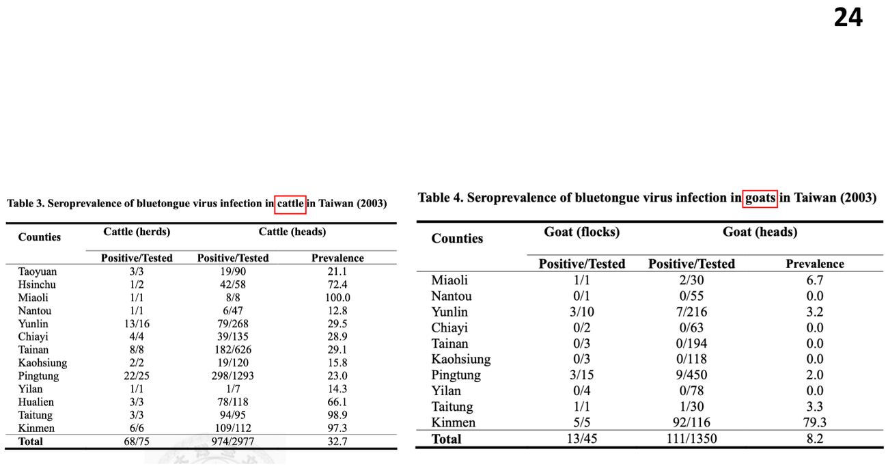
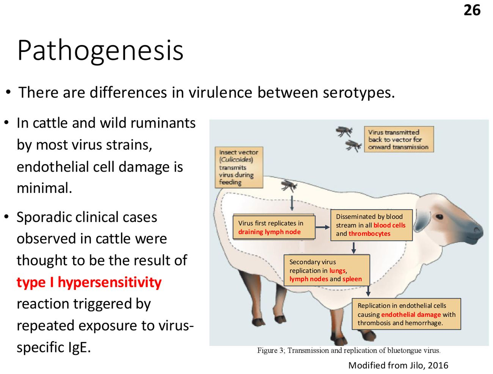
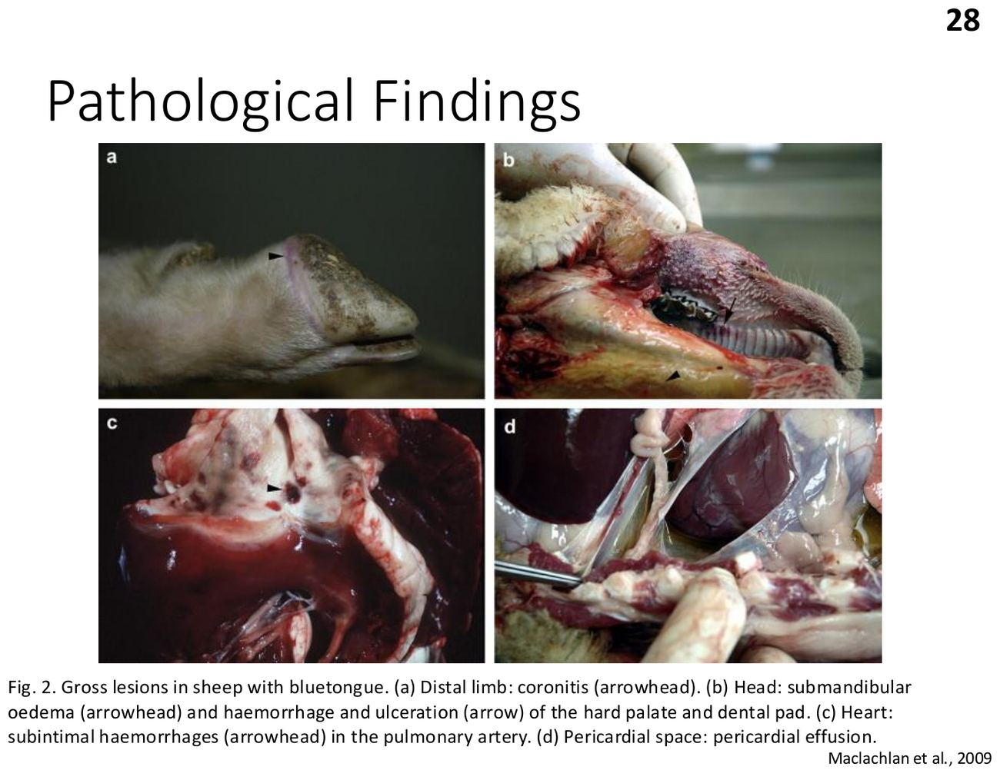
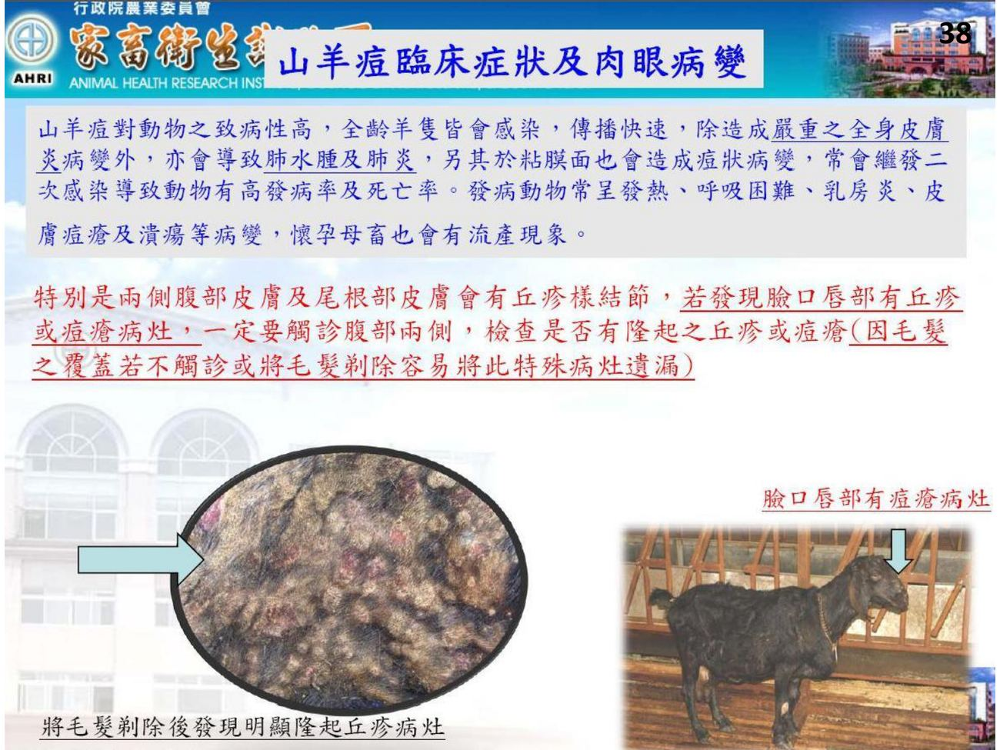
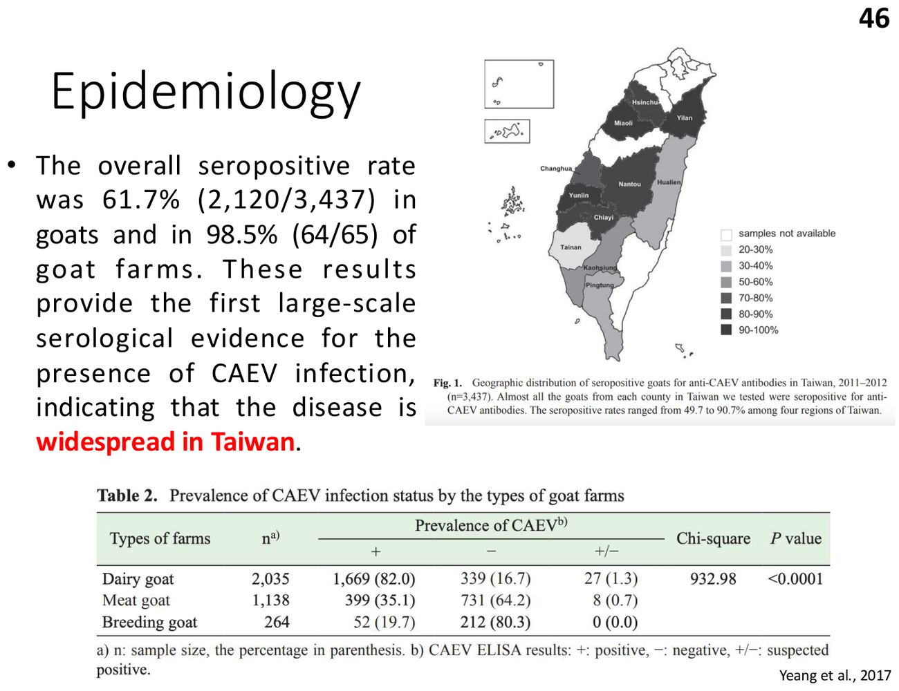
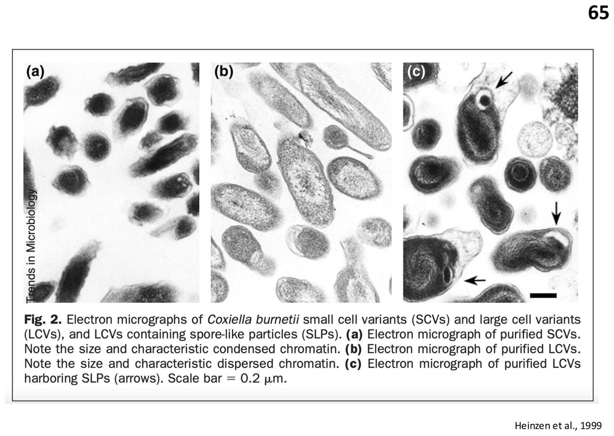
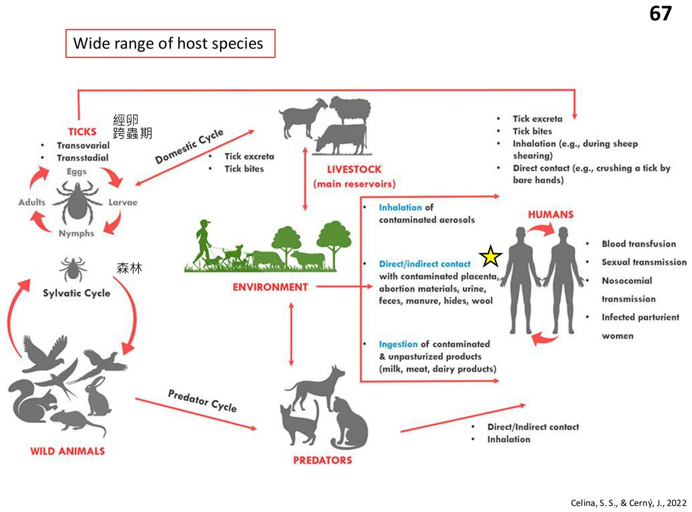
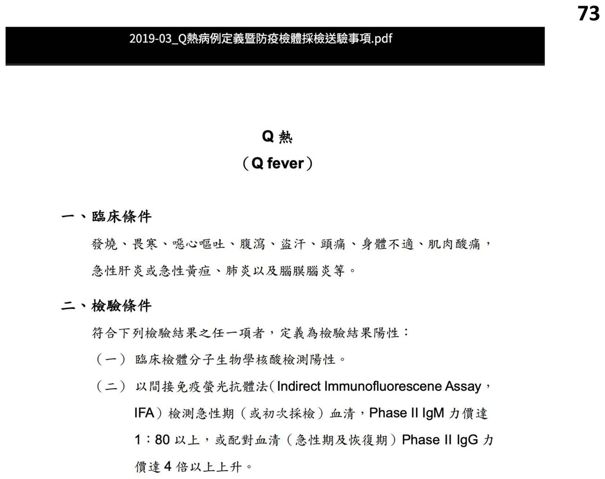
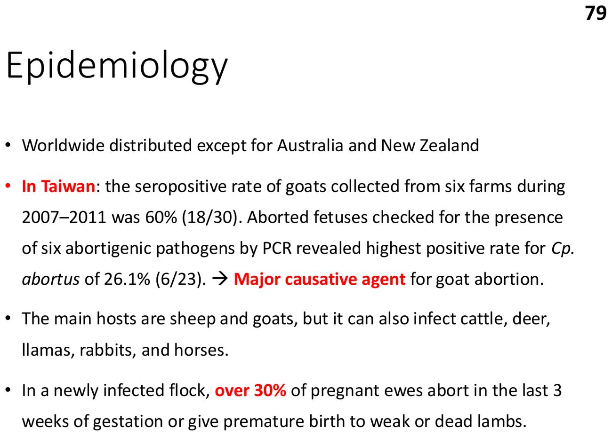
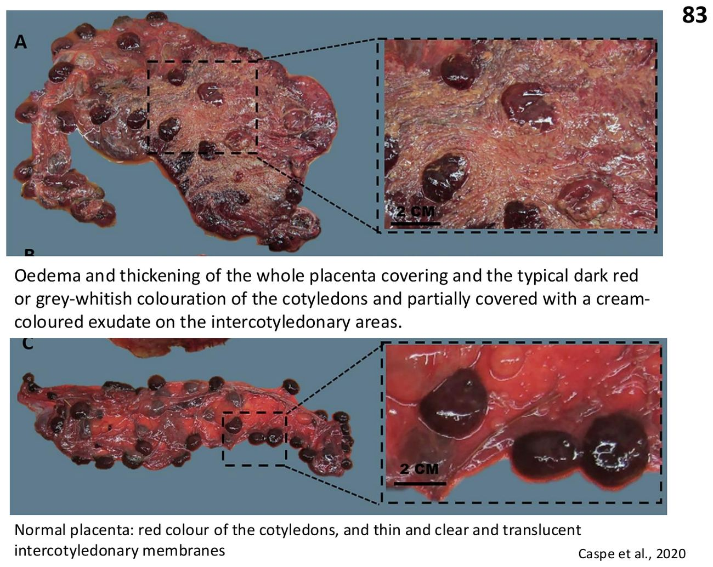

大方向與重點摘要
- 這章在講什麼
- 六個與綿羊、山羊相關的傳染病：惡性卡他熱（malignant catarrhal fever, MCF）、藍舌病（bluetongue, BT）、羊痘與山羊痘（sheeppox & goatpox）、山羊關節炎腦炎（caprine arthritis encephalitis, CAE）、Q 熱（Q fever）、母羊地方性流產（enzootic abortion of ewes, EAE）。
- 為什麼重要
- 羊常是保毒者：MCF 的 OvHV-2 在羊身上沒事，傳給牛幾乎必死。Q 熱與 EAE 是人畜共通的流產病，處理流產胎盤要有防護。台灣山羊 CAE 抗體陽性率 61.7%、98.5% 的羊場陽性；C. abortus 是台灣山羊流產的主要病原；羊痘在 2023 年獲 WOAH 認可台灣為非疫國。
- 這章要抓的重點
-
- MCF：γ 疱疹病毒、Macavirus；AlHV-1（牛羚）與 OvHV-2（綿羊，全球）、CpHV-2（山羊）；保毒宿主羊、牛羚 vs 終末宿主牛、野牛、鹿（不排毒）；頭眼型最常見（高燒、膿性鼻漏、角膜水腫、淋巴結腫大）；特徵病變壞死性血管炎；無有效疫苗。
- 藍舌病：Reoviridae、Orbivirus、10 段 dsRNA、至少 29 個血清型；庫蠓生物性傳播、非接觸傳染；牛是保毒與增殖宿主，羊（歐洲細毛與肉用品種）病最重；初次入侵羊群發病 50–75%、死亡 20–50%；舌頭腫脹、蹄冠炎；懷孕母羊不可用活減毒疫苗。
- 羊痘與山羊痘：Capripoxvirus（與 LSD 同屬）；高度接觸傳染；血清學交叉反應；痂皮中病毒可存活數月；流行區發病 70–90%、死亡 5–10%（進口或幼畜近 100%）；病理「羊痘細胞」與嗜酸性胞質包涵體；一種 capripox 疫苗可交叉保護。
- CAE：Retroviridae、Lentivirus，與綿羊 Maedi-Visna 合稱小反芻獸慢病毒（SRLVs）；主要經初乳與乳汁傳播（初乳有抗體也擋不住）；終生持續感染，只有 10–30% 發病；2–4 月齡小羊白質腦脊髓炎、成羊關節炎（腕關節）、硬乳房、間質性肺炎；沒有疫苗。
- Q 熱：Coxiella burnetii，絕對細胞內菌；小細胞型耐環境、耐多數消毒劑、耐熱耐乾燥；主要經吸入氣膠或塵土；胎盤每克可達 10⁹ 菌；反芻獸多亞臨床，或懷孕後期流產；人為第四類法定傳染病；實驗室需 P3。
- EAE：Chlamydophila abortus；流產的胎盤與子宮分泌物是主要傳染源；新感染羊群 > 30% 懷孕母羊在最後 2–3 週流產；胎盤子葉壞死出血、子葉間增厚如皮革；長效 oxytetracycline 與疫苗控制。
- 容易混淆
- MCF vs 黏膜病 vs 藍舌病：講義指出鼻分泌物、角膜水腫、發燒與淋巴結腫大有助於把 MCF 與黏膜病、藍舌病分開。誰是保毒者：MCF 是羊（牛發病），藍舌病是牛（羊發病）。Q 熱 vs EAE：都是懷孕後期流產、胎盤增厚如皮革；EAE 的血管炎較常見，而且兩者的 EB 在抹片上無法區分。
- 考試可能怎麼問
（推測） - MCF 病毒分類、保毒與終末宿主、傳播年齡、病型、病變；藍舌病病原、病媒、保毒宿主、易感品種、疫苗禁忌；羊痘交叉保護與疫苗；CAE 傳播與防治（新生小羊立刻隔離、巴氏殺菌乳）；Q 熱病原型態、傳播、人的症狀、法定分類；EAE 病原、流產時間、診斷與控制。
內容以老師講義為主體。標示「補充」的段落（含「讀書補充Note」）是講義以外的延伸；標示「推測」的是依講義強調處推測的出題方向，不是考古題。考試範圍以老師上課為準。圖片為老師講義截圖（部分原出處為文獻、家畜衛生試驗所、農業部或新聞）。
惡性卡他熱 Malignant Catarrhal Fever (MCF)
羊與牛羚帶著病毒沒事，牛、野牛、鹿被傳到就幾乎必死。
病原（p.3–6）必考
- 常致死的淋巴增生性疾病；疱疹病毒科、γ 疱疹病毒亞科、Macavirus 屬。
- 主要感染反芻獸，罕見於豬。
- 歷史：1798 年歐洲報告綿羊相關 MCF；1850 年非洲馬賽人發現接觸牛羚（wildebeest）的牛易得 MCF。
| 病毒 | 保毒宿主 | 分布與重點 |
|---|---|---|
| AlHV-1（Alcelaphine herpesvirus-1） | 牛羚 | 非洲多數國家 |
| OvHV-2（Ovine herpesvirus-2） | 綿羊 | 全球；也造成鹿科動物 MCF |
| CpHV-2（Caprine herpesvirus-2） | 山羊 | 全球多數家養山羊族群地方性流行；造成鹿科 MCF |
流行病學與傳播（p.7–8）必考
- 保毒宿主（reservoir）：綿羊、山羊、牛羚。
- 臨床易感的終末宿主（dead-end）：牛、野牛、鹿——不排毒。
- 發病率不一；通常散發，單一或少數病例。兩種病毒在牛幾乎都致死，也是養鹿場的重要疾病。
- AlHV-1：牛羚多在圍產期感染（少數子宮內），出生幾個月內全部感染並終生帶毒。
- OvHV-2：部分小羊子宮內感染，多數在 3–6 月齡經氣膠感染。
- 傳給易感宿主：接觸或氣膠，主要來自 1 歲以下的牛羚仔（AlHV-1）與離乳小羊（OvHV-2）的呼吸道分泌物。
致病機轉（p.9）理解
- 尚未完全了解；血管周圍淋巴增生。
- 血管病灶以 CD8⁺ T 淋巴球為主。
- 是病毒直接作用，還是針對感染細胞的免疫反應？仍有爭議。
臨床表現（p.10–14）必考
- 自然感染潛伏期 3–8 週。
- 病型其實是連續的程度差異：甚急性、消化道型、常見的「頭眼型」、輕症型；同一病毒株可以出現所有病型。
- 牛較常見淋巴結腫大與嚴重眼部病變；出血性腸炎與膀胱炎則比鹿、野牛少。
- 鼻分泌物、角膜水腫、發燒、淋巴結腫大可幫助區分 MCF 與黏膜病或藍舌病。
| 頭眼型（Head-and-Eye Form，p.11） |
|---|
| 極度沉鬱、厭食；無乳；高燒 41–41.5°C |
| 大量黏液膿性鼻分泌物；嚴重呼吸困難伴鼾聲 |
| 眼分泌物伴不同程度角膜水腫（混濁）；眼瞼痙攣、葡萄膜炎；鞏膜血管充血 |
| 前鼻黏膜與頰黏膜表淺壞死 |
病理（p.15）必考
- 特徵病變（pathognomonic）：壞死性血管炎，血管中膜與外膜有類淋巴母細胞與巨噬細胞浸潤。
- 口腔、鼻腔、咽：從輕微出血紅斑到大範圍嚴重發炎、獨立潰瘍。
預防與控制（p.16）必考
- 目前沒有有效疫苗。
- 可用早期離乳與隔離生產無病毒的綿羊。
- 把帶毒動物與易感物種分開（例如牛不要和羊混養）。
藍舌病 Bluetongue (BT)
庫蠓傳的病毒，牛帶著病毒擴增，綿羊才是病得重的那個。
病原（p.18）必考
- 節肢動物傳播、非接觸傳染的病毒病，主要感染家養與野生反芻獸（例如白尾鹿）。
- 藍舌病病毒（BTV）：呼腸孤病毒科（Reoviridae）、Orbivirus 屬，10 段 dsRNA。
- → 至少 29 個血清型，遺傳差異大；各地區血清型不同，取決於庫蠓（Culicoides）的分布與活動。
- WOAH 通報疾病。
流行病學（p.21–24）必考
- 牛是保毒宿主與增殖宿主。
- 重症最常見於歐洲細毛與肉用品種綿羊；某些血清型（BTV-8）也會讓牛重症。
- 分泌物與排泄物中病毒極少 → 直接、間接或氣膠傳播都不太可能 → 幾乎只靠特定庫蠓生物性傳播。
- 經胎盤感染（綿羊與牛）：活減毒或疫苗株、血清型 8；依懷孕階段從流產到先天缺陷（例：2015 年法國 BTV-8 再出現）。
- 牛的感染是暫時性，不會持續感染、也不會免疫耐受（和 BVDV 不同）。
- 有交配傳播的紀錄，但不是重要途徑。

台灣：牛的血清陽性率（32.7%）遠高於山羊（8.2%），而且台灣分離株過去研究顯示毒力低（p.23–24）。
發病率、死亡率與致病機轉（p.25–26）必考
- 羊群首次發生時：臨床發病率可達 50–75%、死亡率 20–50%。
- 血清型之間毒力不同。
- 病毒先在引流淋巴結複製 → 經血流散播（所有血球與血小板）→ 在肺、淋巴結、脾二次複製 → 在內皮細胞複製造成內皮損傷、血栓與出血。
- 牛與野生反芻獸：多數病毒株造成的內皮損傷很少；牛的散發病例被認為是重複暴露、病毒專一性 IgE 引發的第 I 型過敏。

臨床表現（p.27）必考
綿羊（潛伏期通常 < 7 天）
- 高燒 5–6 天
- 黏液膿性、常帶血的鼻分泌物；流涎
- 頰黏膜腫脹、發紅、擦傷
- 鼾聲（呼吸道阻塞）
- 甚急性病例在出現症狀後約 6 天因窒息死亡
- 部分恢復但恢復期很長，可能要數個月
- 但世界上很多地區綿羊感染是亞臨床
牛（罕見）
- 後期（感染後 2–3 週）可能光敏性皮膚炎
- 懷孕早期感染可造成流產、死產、先天畸形
病理（p.28–30）理解

補充：病名來自嚴重病例舌頭因發紺與水腫呈藍紫色；臨床上看到蹄冠炎與肺動脈基部出血是藍舌病的有用線索。
預防與控制（p.31）必考
- 減少病媒（vector abatement）。
- 病毒傳入一個地區後，疫苗是唯一令人滿意的控制方法。
- 疫苗不能預防或清除感染，但能把損失壓到很低。
- 懷孕母羊不可用活減毒疫苗（會經胎盤感染，見 p.22）。
羊痘與山羊痘 Sheeppox & Goatpox
和牛結節疹同屬 Capripoxvirus：高度接觸傳染、痂皮裡病毒能活好幾個月，一種疫苗可以保護三種病。
病原與經濟損失（p.33–34）必考
- 高度接觸傳染，由羊痘病毒（SPPV）與山羊痘病毒（GTPV）引起，兩者都是 Capripoxvirus 屬，合稱 capripox 感染。
- WOAH 通報疾病。
- 兩病毒基因上非常接近 → 血清學交叉反應；實驗中很多可跨物種感染。
- 經濟損失：死亡、流產、乳房炎、羊毛損失、皮革廢棄、出口損失。
- 台灣：WOAH 於 2023 年 12 月 19 日（民國 112 年）認可我國為羊痘非疫國；10 年以上無羊痘案例。
補充：台灣將羊痘列為甲類動物傳染病（防檢署動物傳染病分類）。
致病與流行病學（p.35）必考
- 所有年齡都會發生，小羊最嚴重。
- 病毒在鼻、口分泌物中存在數週，在掉落的痂皮中可存活數個月。
- 傳播：氣膠或直接接觸汙染物，以及經由醫源性或昆蟲造成的皮膚擦傷。
- 高發病率（流行區 70–90%）、死亡率不一（流行區 5–10%，進口或幼齡動物可接近 100%）；流行區本地品種易感性低得多。
臨床表現（p.36–38）必考
- 羊痘與山羊痘表現相似；潛伏期 1–2 週。
- 發燒、全身淋巴結腫大、眼瞼腫脹、黏液膿性眼鼻分泌物、廣泛皮膚病灶。
- 惡性型：小羊或小山羊的全身性疾病，病灶遍布皮膚與呼吸道、消化道黏膜。

看到臉、口、唇有丘疹或痘瘡時，一定要觸診腹部兩側與尾根，找有沒有隆起的丘疹或痘瘡；被毛覆蓋的病灶若不觸診或不剃毛很容易漏掉。傳染性化膿性皮膚炎（羊口瘡）只在口唇，沒有全身症狀。
病理（p.39–40）理解
- 皮膚、黏膜病灶與淋巴結腫大；肺也可有病灶。
- 表皮基底層水腫性變性，少數角質細胞含 5–7 μm 嗜酸性胞質包涵體。
- 丘疹期真皮廣泛水腫，血管周圍與膠原束間聚集大量含包涵體的單核細胞——羊痘細胞（sheeppox cells）：受感染的單核球、巨噬細胞、纖維母細胞，不是內皮或上皮細胞。
預防與控制（p.42）必考
- 禁止從疫區進口活動物與未加工產品。
- 傳入時：環狀免疫（ring vaccination）並撲殺受感染羊群。
- 單一 capripox 疫苗可對所有物種、所有 capripox 感染（羊痘、山羊痘、牛結節疹）提供保護。
- 死毒疫苗只有暫時保護；活減毒疫苗保護超過 1 年。
對照牛結節疹：LSD 疫苗也可用羊痘或山羊痘病毒為基礎。
山羊關節炎腦炎 Caprine Arthritis Encephalitis (CAE)
喝初乳就感染、一輩子帶毒，多數不發病；控制只能從「出生就把小羊帶走」做起。
病原與流行病學（p.44–46）必考
- 山羊的持續性慢病毒感染；WOAH 通報疾病。
- 多種病型：小羊白質腦脊髓炎、慢性增生性多發性滑膜炎、硬化性乳房炎、間質性肺炎。
- 1974 年首次描述；有些牛群（羊群）感染率高達 80%。台灣 1993 年以病理與電顯首次確認。
- CAEV：反轉錄病毒科（Retroviridae）、Orthoretrovirinae、Lentivirus 屬；與綿羊的 Maedi-Visna（MV，又稱綿羊進行性肺炎 OPP）合稱小反芻獸慢病毒（SRLVs）。
- 台灣（Yeang et al., 2017）：山羊血清陽性率 61.7%（2,120/3,437），98.5%（64/65）羊場陽性 → 台灣廣泛分布。

傳播（p.47）必考
- 所有品種、年齡都可感染；差異多反映管理不同。
- 主要經吃進受感染的初乳或乳汁。
- 初乳中有抗體也無法預防感染。
- → 新生小羊應出生後立刻與母羊分開，餵巴氏殺菌乳，很多可以不被感染。
- 接觸傳播會讓疾病擴散；子宮內感染罕見。
致病機轉（p.48）必考
- 出生時感染 → 終生持續感染，但只有 10–30% 發病。
- 可感染脈絡叢、乳腺上皮、纖維母細胞、內皮細胞、單核球；但主要在成熟巨噬細胞內複製：單核球分化成巨噬細胞時病毒被活化，並持續存在於巨噬細胞、微膠細胞、單核球、樹突細胞。
- 病灶（淋巴增生性）至少部分是免疫媒介，也有病毒直接破壞。
臨床表現（p.49–50）必考
| 病型 | 年齡 | 表現 |
|---|---|---|
| 無症狀 | — | 大多數感染羊（約 70%）無症狀 |
| 神經型（白質腦脊髓炎） | 2–4 月齡 | 脊髓運動功能障礙，沒有大腦症狀；漸進：後肢運動失調、嘴唇顫抖 → 不發燒；後肢運動失調、伸肌麻痺、四肢麻痺 → 餓死或續發感染；一旦麻痺必死 |
| 關節炎 | 成羊 | 跛行、關節積液、腕關節腫大、腕部水囊瘤常見 |
| 間質性肺炎 | — | 呼吸困難、咳嗽、惡病質 |
| 乳房炎 | 泌乳羊 | 乳房硬、腫；乳量下降 |
病理（p.51–59）理解
- 關節：腕、膝、跗關節慢性增生性關節炎／滑膜炎；腕部水囊瘤；組織見明顯絨毛狀增生性滑膜炎，大量淋巴漿細胞與組織球浸潤。
- 病例（p.52）：3 月齡 Alpine 母山羊，數個月呼吸道症狀；2016 年 11 月因左前肢與兩後肢麻痺到台大動物醫院，精神正常；住院後出現右向眼球震顫；神經學定位 L2 與前腦；安樂死。腦與脊髓切片、組織病理，原位雜交顯示病毒核酸在巨噬細胞（巨噬細胞向性）。
預防與控制（p.60）必考
- 隔離或淘汰血清陽性動物。
- 預防或減少圍產期傳給小羊，特別是初乳與乳汁傳播。
- 沒有有效疫苗。
- 標記輔助遺傳選育，找出較不易感染的動物。
Q 熱 Q Fever
反芻獸多半沒症狀，但胎盤裡的菌量驚人，而且吸一口氣膠就能讓人生病。
概述（p.62–63）必考
- 人畜共通、WOAH 通報疾病。
- 台灣第四類法定傳染病（2007 年）（人）。
- 1935 年澳洲昆士蘭屠宰場工人出現非典型肺炎，稱「屠宰場熱（abattoir fever）」；因病因成謎（query），1937 年命名為 Q fever。
病原（p.64–65）必考
- Coxiella burnetii：革蘭氏陰性、絕對細胞內菌，γ-變形菌綱。
- 兩種形態：
- 大細胞型（large cell variant）：多形性、代謝活躍（會複製）、對環境敏感。
- 小細胞型（small cell variant）：短桿狀、不複製、抵抗環境壓力——對大多數消毒劑有抗性、耐熱、耐乾燥。
- 兩種抗原型：第 I 相（動物與野外中有致病性）；第 II 相（在雞胚卵黃囊與細胞培養連續繼代產生，致病性較低）。

傳播（p.66–67）必考
- 全球分布。
- 主要途徑：吸入含病原的氣膠或塵土；其他：皮膚傷口、結膜接觸、消化道。
- 病原存在於乳腺、乳房淋巴結、子宮、胎盤。
- 經血液、乳汁、糞、尿、羊水與分泌物傳播。
- 蜱也可為病媒（少見）；在蜱體內可經卵與跨蟲期傳遞。

致病機轉（p.68）必考
- 感染單核球與巨噬細胞，在吞噬體的酸性環境中存活（酸性是它複製的訊號）。
- 對動物胎盤的滋養層細胞（trophoblasts）親和力高：胎盤每克可達 10⁹ 菌。
- 經子宮、胎盤、糞、乳汁排出。
- 人吸入後：先在肺增殖，再經血流到全身器官。
臨床表現（p.69）必考
反芻獸
- 潛伏期差異很大，約 9–28 天
- 大多數亞臨床感染
- 可能輕微發燒與各種繁殖問題：不孕、流產（懷孕後期）、死產、弱仔、胎衣滯留、子宮內膜炎
人
- 最常見：發燒、疲倦、頭痛、意識改變、噁心嘔吐、下痢
- 非典型肺炎可致命的急性呼吸窘迫症候群
- 肉芽腫性肝炎、肝腫大、黃疸
- 慢性感染：腦膜炎、睪丸炎、心肌炎、心內膜炎、腎炎（前置因子如心臟瓣膜疾病、血管缺損）
病理（p.70–71）必考
- 肉眼：動物的病變只在胎盤：增厚、如皮革，多灶至融合的鈣化。
- 顯微：動物為壞死性子葉間胎盤炎，細胞內可見菌體，± 血管炎；人則在各組織形成肉芽腫結節。
診斷（p.72–73）必考
- P3（生物安全第三等級）防護設備與措施。
- 找菌：免疫染色；核酸：PCR；血清：間接免疫螢光（IFA）、ELISA、補體結合（CF）。
- 疾管署人類病例定義（p.73）：臨床條件為發燒、畏寒、噁心嘔吐、腹瀉、盜汗、頭痛、肌肉痠痛、急性肝炎或黃疸、肺炎、腦膜腦炎等；檢驗條件任一：核酸檢測陽性；或 IFA 急性期血清 Phase II IgM ≥ 1:80，或配對血清 Phase II IgG 上升 ≥ 4 倍。

預防與控制（p.74）必考
- 疫苗：降低發病、排菌並預防流產，但不能預防感染。
- 抗生素：chlortetracycline、tetracycline 或 chloramphenicol；但在動物單獨用抗生素控制臨床症狀缺乏明顯效果。
- 衛生與生物安全：清除糞肥、處理胎盤、工作人員穿消毒過的防護衣、限制訪客。
補充：chloramphenicol 在台灣與許多國家禁用於食用動物；講義列的是可用的抗生素種類，實際用藥要依法規。
母羊地方性流產 Enzootic Abortion of Ewes (EAE)
潛伏在母羊體內，懷孕時被喚醒，在最後 2–3 週流產；流產的胎盤是最大的傳染源。
概述與病原（p.76–77）必考
- 人畜共通、WOAH 通報疾病；山羊表現相似；也可造成牛、豬、馬流產但發生率低。
- Chlamydophila abortus：小型、革蘭氏陰性、絕對細胞質內寄生菌。
- 兩種形態：原質體（elementary body, EB）：小而緻密的球體，低溫環境（接近 0°C）可保持感染力數個月；網狀體（reticulate body, RB）：不具感染力。
- 抵抗：酸、鹼、甲苯基化合物、石灰；對多數消毒劑敏感：1% 次氯酸鈉、70% 酒精、戊二醛、甲醛；加熱也可去活。
傳播與流行病學（p.78–79）必考
- 引入潛伏感染母羊。
- 主要傳染源：病羊流產的胎盤或子宮分泌物，含大量 C. abortus。
- 感染母羊在流產前一週到流產後兩週排菌。
- 途徑：經口或經鼻、垂直傳播；牛羊糞尿與山羊乳中也有菌。
- 全球分布，澳洲與紐西蘭除外。主要宿主綿羊與山羊，也可感染牛、鹿、駱馬、兔、馬。
- 台灣：2007–2011 年六個羊場山羊血清陽性率 60%（18/30）；流產胎兒 PCR 檢測六種流產病原，Cp. abortus 陽性率最高 26.1%（6/23） → 台灣山羊流產的主要病原。
- 新感染羊群：超過 30% 懷孕母羊在最後 3 週流產，或早產弱仔、死仔。

致病機轉（p.80）理解
- 感染後推測先停留在扁桃腺，再經血液與淋巴散播；潛伏部位尚未確定。
- 懷孕期的免疫調節讓菌從潛伏狀態釋放 → 菌血症 → 胎盤感染。
臨床表現（p.81）必考
- 懷孕最後 2–3 週流產、死產或產下弱仔。
- 懷孕母羊常沒有明顯症狀；有些流產前有少量紅色或褐色陰道分泌物。胎衣滯留與乳房炎不常見。
- 流產後母羊可很快恢復，但有些會持續有暗褐色陰道分泌物。
病理（p.82–84）必考
- 流產胎兒：通常無肉眼異常；組織上可見肝門區單核細胞浸潤與肝炎。
- 胎盤：子葉壞死、出血；子葉間區域增厚、水腫、如皮革。
- 血管炎比 C. burnetii 感染更常見。

診斷（p.85–86）必考
- 母羊在懷孕後期流產、死產或產下弱仔時要考慮 C. abortus。
- 組織抹片：病羊胎盤與子宮分泌物抹片，經 Giemsa 或抗酸染色找 EB。
- 注意：C. abortus 的 EB 在抹片上無法與 C. burnetii 區分。
- ELISA、IFA、PCR 或病原分離。
預防與控制（p.87）必考
- 把感染母羊與小羊分開，並給母羊長效型 oxytetracycline，是控制羊群持續感染的主要方法。
- 疫苗（活毒或不活化皆可）可減少母羊流產，但不能預防小羊感染。
- 具人畜共通風險：處理可能受感染材料要小心，送檢檢體要妥善包裝。
補充：長效型 oxytetracycline 在小反芻獸通常以 IM 給予；講義未列劑量，請依產品仿單並注意停藥期。孕婦要避免接觸流產羊與胎盤（C. abortus 可造成人流產）。
鑑別比較 Comparison
三張表：誰是保毒者、兩個流產病、四個病毒病。
保毒宿主與發病宿主必考
| 疾病 | 保毒／增殖宿主 | 發病重的宿主 | 傳播 |
|---|---|---|---|
| MCF（OvHV-2） | 綿羊（牛羚為 AlHV-1） | 牛、野牛、鹿（終末宿主，不排毒） | 離乳小羊呼吸道分泌物，接觸或氣膠 |
| 藍舌病 | 牛 | 綿羊（歐洲細毛與肉用品種） | 庫蠓（生物性） |
Q 熱 vs 母羊地方性流產必考
| Q 熱 | EAE | |
|---|---|---|
| 病原 | Coxiella burnetii | Chlamydophila abortus |
| 環境抵抗力 | 小細胞型耐多數消毒劑、耐熱耐乾 | EB 低溫可存活數月，但對多數消毒劑敏感 |
| 主要傳播 | 吸入氣膠或塵土 | 流產胎盤與子宮分泌物，經口鼻 |
| 流產時間 | 懷孕後期 | 最後 2–3 週 |
| 胎盤 | 增厚如皮革、鈣化；子葉間壞死性胎盤炎 ± 血管炎 | 子葉壞死出血、子葉間增厚如皮革；血管炎較常見 |
| 抹片 | EB 在抹片上無法區分 | |
| 控制 | 疫苗（不防感染）、衛生、胎盤處理 | 長效 oxytetracycline、疫苗（不防小羊感染） |
| 人 | 第四類法定傳染病；非典型肺炎、心內膜炎 | 人畜共通 |
四個病毒病理解
| MCF | 藍舌病 | 羊痘／山羊痘 | CAE | |
|---|---|---|---|---|
| 病毒 | γ 疱疹（Macavirus） | Reoviridae Orbivirus，10 段 dsRNA | Capripoxvirus | Lentivirus（SRLV） |
| 傳播 | 接觸、氣膠 | 庫蠓（非接觸） | 高度接觸、氣膠、皮膚傷口 | 初乳、乳汁、接觸 |
| 特徵 | 頭眼型、角膜水腫、壞死性血管炎 | 舌腫、蹄冠炎、肺動脈出血 | 全身痘疹、羊痘細胞、包涵體 | 小羊脊髓麻痺、成羊腕關節炎、硬乳房 |
| 疫苗 | 無 | 有（懷孕母羊不用活毒） | 有（活減毒 > 1 年，交叉保護） | 無 |
考試方向（推測）
以下是依講義強調的內容推測的出題方向，不是考古題，考試範圍以老師上課為準。
| 可能考法 | 答題重點 |
|---|---|
| MCF 病原與宿主 | γ 疱疹、Macavirus；AlHV-1（牛羚）、OvHV-2（綿羊，全球）、CpHV-2；保毒 vs 終末宿主 |
| MCF 傳播與表現 | OvHV-2 小羊 3–6 月齡氣膠感染；1 歲以下離乳小羊分泌物；潛伏 3–8 週；頭眼型；鑑別線索；壞死性血管炎；無疫苗 |
| 藍舌病病原 | Reoviridae Orbivirus、10 段 dsRNA、≥ 29 血清型、WOAH 通報 |
| 藍舌病流行病學 | 庫蠓生物性傳播；牛為保毒增殖宿主；細毛與肉用綿羊重症；BTV-8；經胎盤；牛不持續感染 |
| 藍舌病臨床與防治 | 首發 50–75%／20–50%；高燒、帶血鼻漏、流涎、頰黏膜擦傷、蹄冠炎；病媒控制、疫苗、懷孕母羊禁活毒 |
| 羊痘 | Capripoxvirus；高度接觸；痂皮存活數月；70–90%／5–10%；羊痘細胞；環狀免疫與撲殺；交叉保護、活減毒 > 1 年；台灣 2023 年非疫國 |
| CAE | Lentivirus、SRLV；初乳乳汁傳播、抗體擋不住；10–30% 發病；2–4 月齡神經型；腕關節炎、硬乳房；隔離小羊、巴氏殺菌乳；無疫苗 |
| Q 熱 | C. burnetii；大小細胞型；吸入；胎盤 10⁹/g；反芻獸亞臨床或後期流產；人第四類法定傳染病；P3；疫苗不防感染 |
| EAE | C. abortus；EB 與 RB；流產胎盤為主要傳染源；最後 2–3 週流產；台灣山羊流產主要病原；長效 oxytetracycline |